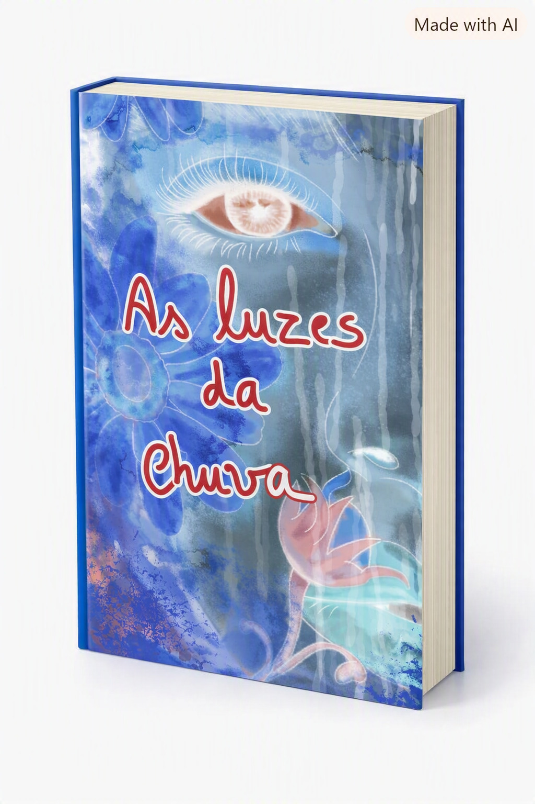
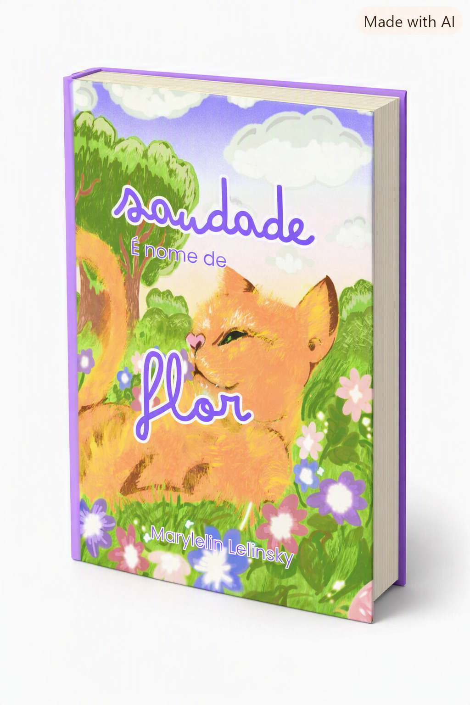

Autora e ilustradora portuguesa
Histórias que vivem onde o tempo não passa.
Sou autora e ilustradora portuguesa. Escrevo ficção literária, poesia e literatura infantil, explorando temas como a memória, a perda e os lugares onde o tempo permanece suspenso.
Cada história nasce de uma emoção — e procura encontrar quem a reconheça.

Uma história onde o tempo se dobra e as memórias ganham corpo. Entre o que fomos e o que esquecemos, algo continua a chamar.
Uma história que cheira a quem já não está. Um jardim onde a ausência floresce em forma de amor.

Fragmentos de pensamento e emoção. Um espaço onde a mente fala sem filtros.
A minha ilustração nasce das mesmas emoções que escrevo. Trabalho com uma estética sensível, orgânica e expressiva, onde cada traço procura contar uma história.
Email: teuemail@email.com
Instagram: @teuinstagram